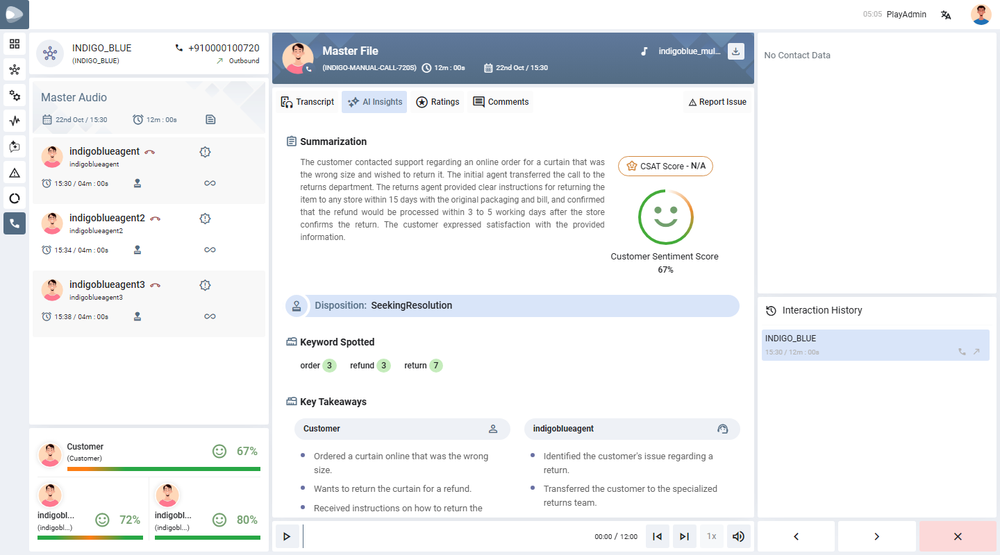
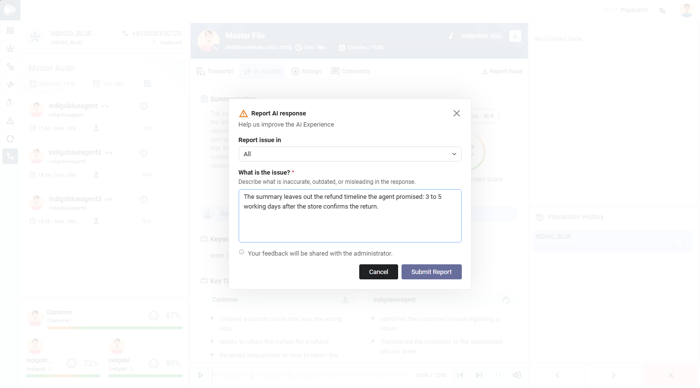
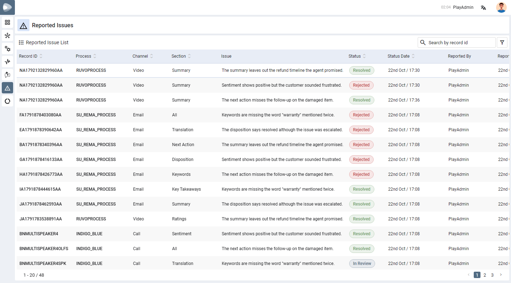
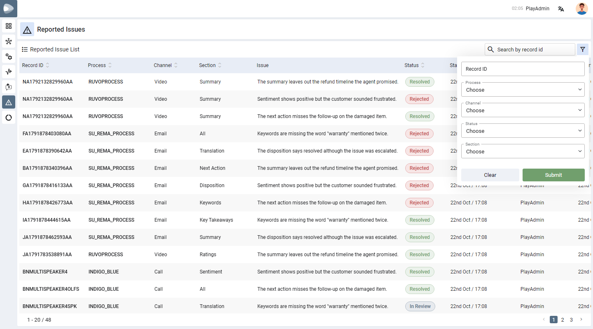
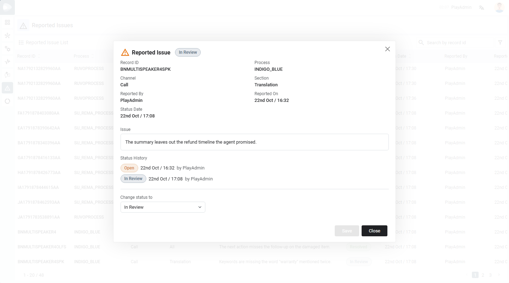

Reported Issues
Users tell PLAY when an AI summary, rating or sentiment looks wrong. Administrators collect those reports in one list, look into each one and record what was done.
01
What this feature does
A feedback loop for the AI.
AI results are not always right. With Report Issue any user can flag a problem on the spot, in the part of the insights it concerns, and describe it in their own words. Nothing about the record changes. The report goes to a list that administrators work through, so the same mistakes can be found, fixed and tracked to the end.
Each report moves through four statuses:
It starts as Open. An administrator can move it to In Review while it is looked into, and finally to Resolved (something was done) or Rejected (the report is not accepted). Every change is kept with its date and the person who made it.
02
Report an issue
For every user, from the record itself.
Open a recording and click the AI Insights tab. When the record already has an AI summary, the Report Issue button appears at the right end of the tabs.

-
Click Report IssueThe Report AI response window opens.
-
Choose what the issue is aboutIn Report issue in pick All, Sentiment, Ratings, Summary, Key Takeaways, Keywords, Disposition, Next Action or Translation.
-
Describe the issueUnder What is the issue? write what is inaccurate, outdated or misleading. This box is required and takes up to 2,000 characters.
-
SubmitClick Submit Report. The feedback is shared with the administrator.

PLAY_TNT_ENABLE_REPORT_AI_ISSUE is true) and the record already has generated insights.03
Who can see the list
Super admins only.
The Reported Issues icon in the left bar is shown only to the super admins of your installation, and only when the feature is switched on for the tenant. Super admins are the users whose login id is in the Nucleus setting PLAY_SYS_SUPER_ADMIN_USER_NAME. For anyone else the icon is hidden, and opening the address by hand returns them to the home page.
PLAY_SYS_SUPER_ADMIN_USER_NAME to the Sys configuration of PLAY in Nucleus, in every environment. The value is the login ids separated by commas, for example PlaySuAdmin, PlayAdmin. Spaces and capital letters do not matter. The list is read when the PLAY service starts, so restart the service after changing it. If the setting is missing or empty, nobody sees the list.04
The Reported Issues list
Every report in one table.
Click the Reported Issues icon in the left bar. The newest report is first, 20 to a page, with the page numbers at the bottom.

| Column | Meaning |
|---|---|
| Record ID | The record the issue was reported on. |
| Process / Channel | The process and channel of that record. |
| Section | The part of the insights the report is about. |
| Issue | What the user wrote (a long text is shortened; open the row to read all of it). |
| Status | A badge: Open, In Review, Resolved or Rejected. |
| Status Date | When the status last changed. |
| Reported By / Reported On | Who reported it, and when. |
05
Search, filter and sort
Find the reports you need.
- Search — type a record id in the box at the top right.
- Filter — click the funnel icon and choose any of Record ID, Process, Channel, Status and Section, then Submit. The filters work together, so a report must match all of them. Clear removes them. The Process list holds only processes that have at least one report.
- Sort — click the arrows next to a column heading to sort by it, and click again to reverse the order.

06
Review an issue and change its status
Click a row to open it.
The window shows every detail of the report, the full text of the issue, the Status History (each status with its date and who set it), and — while the issue is not closed — a Change status to list.

-
Choose the next statusPick it in Change status to. Only later statuses are offered.
-
Write the resolution (for Resolved or Rejected)A Resolution box appears. Describe what was done, or why the report is rejected. It is required and takes up to 2,000 characters.
-
SaveClick Save. The status, the date and your name are added to the history, and the list shows the new badge.
| Status | When it is used | Next |
|---|---|---|
| Open | Just reported, nobody has looked yet. | In Review, Resolved or Rejected |
| In Review | An administrator is looking into it. | Resolved or Rejected |
| Resolved | Something was done. The resolution says what. | Closed |
| Rejected | The report is not accepted. The resolution says why. | Closed |
07
Rules and limits
What PLAY checks.
| Rule | Detail |
|---|---|
| Issue text | Required, up to 2,000 characters. |
| Resolution | Required to set Resolved or Rejected, up to 2,000 characters. |
| Report Issue button | Needs the tenant setting on and a record with generated insights. |
| The list and status changes | Administrators only on the server; the menu item is shown to super admins. |
| Page size | 20 reports per page. |